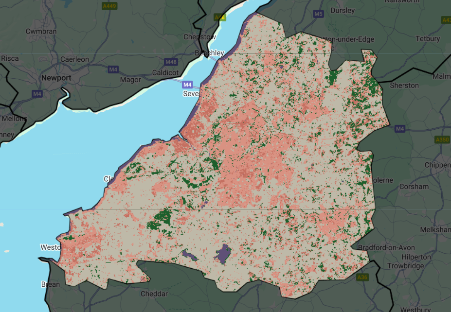
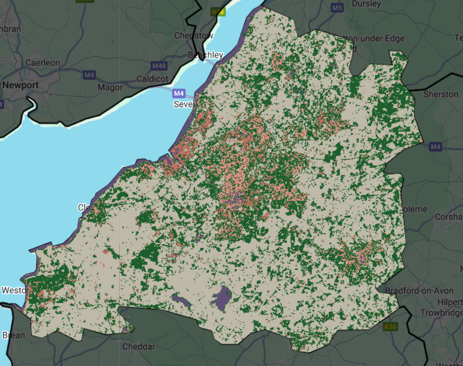
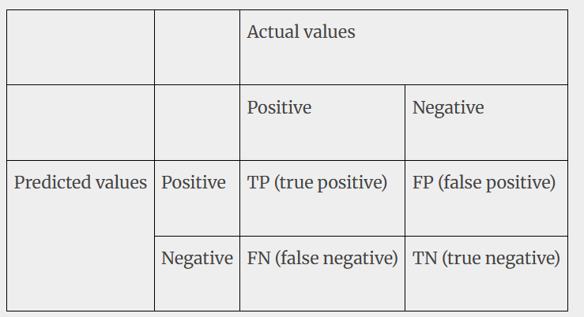

7 Classification II
7.1 Summary
This week we looked at accuracy measures for classification - going to use practical SVM and random forest model to explain different accuracy measures.
In the practical last week I focused on my undergraduate city of Bristol. A simple random forest model with limited training data (3-5 polygons for each land type) - polygon data for land use types , forest, low urban, high urban, water, bare earth.
Train/test split -> why we do it
I then found code on google earth engine for SVM and adapted for my code.
comparing accuracy measures for different machine learning algorithms in practical - what does the values each mean ?
Random Forest Classifier:

Support Vector Machine (SVM):

Light pink: Low urban
Blue: Water
Dark pink: High urban
Beige: Grass
Grey: Bare earth
Green: Forest
Visually, SVM predicts that there is a lot more forest in what the RF predicts as low urban. But how can we interpret these results? There are various measures each with their own advantages and disadvantages.
Accuracy Assessment
Each predicted value is placed into this Confusion Matrix, which acts as the foundation for the upcoming measures.

Overall accuracy measures the total correct prediction in proportion to all prediction
\[ \frac{\text{Number of Correct Predictions}}{\text{Total Predictions}} = \frac{TP + TN}{TP + FP + FN + TN} \]
- RF: 0.981 | SVM: 0.879
RF’s high overall accuracy suggests strong general performance across all classes. SVM’s lower score may stem from misclassifications, especially in overlapping classes
7.1.0.1 Class-Specific Metrics (Low Urban Class)
Producer accuracy measures the true positive rate in a class or the proportion of correctly identified positives relative to actual positives. I will just look at low urban class, so the number of pixels correctly identified pixels as low urban divided by the total pixels in the low urban class.
\[ \text{Producer Accuracy} = \frac{TP}{TP + FN} \] RF: 0.943 | SVM: 0.478
SVM misses ~52% of true low urban pixels (e.g., misclassifying them as forest). RF captures ~94% of actual low urban areas.
User accuracy measures the proportion of correctly predicted positives relative to all predicted positives.
\[ \text{User Accuracy} = \frac{TP}{TP + FP} \]
Again, using the low urban class - the number of pixels correctly identified as low urban divided by the total number of pixels that are claimed to be low urban.
RF: 0.955 | SVM: 0.962
SVM’s and RF’s high User Accuracy means its low urban predictions are reliable here (few false positives).
There is also F1 score which is the harmonic mean of precision (UA) and recall (PA). Useful for balancing UA and PA, especially in imbalanced datasets like our own.
RF: 0.949 | SVM: 0.639
7.1.0.2 Additional Metrics
Kappa coefficient is designed to express the accuracy of an image compared to the results done by chance. Ranges from 0 to 1. calls to abandon it as it may not be that useful
\[ \kappa = \frac{\text{Overall Accuracy} - \text{Expected Accuracy}}{1 - \text{Expected Accuracy}} \]
Where expected accuracy =
\[ (\frac{\sum (\text{Row Total} \times \text{Column Total})}{N^2}) \]
RF: 0.977 | SVM: 0.855
Both models perform better than random chance, but Kappa is debated due to sensitivity to class distribution.
7.2 Application
Contiuining on from last week -> here are also more complicated classification use case in remote sensing: Object detection - > involves identifying the locations and types of specific targets within an image and labeling them with bounding boxes. e.g., Disaster detection (landslides, ship monitoring, resource exploration)
more complicated problems need more specialised techniques:
moving beyond basic machine learning techniques, there has been developments in deep learning methods. ANNs and CNNs -> (Yang et al., n.d.)
Artificial Neural Networks (ANNs): use many hidden layers to model multiple levels of abstraction, have shown great promise in remote sensing, often outperforming methods like SVM for tasks like hyperspectral image classification. Convolutional Neural Networks (CNNs), a type of deep learning model, are particularly good at exploiting semantic features of imagery data by directly extracting features from massive amounts of imagery. (Maxwell, and Fang 2018). reword
Landslide detection. Ship detection.
a brand new model for specifically detecting objects in satellite imagery. (Yang et al., n.d.) RS-YOLOX CNN
“Unlike traditional methods that rely on manual feature selection, modern deep learning-based models learn patterns directly from the data. The researchers improved previous YOLOX model by adding Efficient Channel Attention (ECA), which helps the model focus on important parts of an image while ignoring background noise. They also used Adaptively Spatial Feature Fusion (ASFF), which enhances the detection of small objects by combining information from different scales in an image. Additionally, they replaced the standard training loss function with Varifocal Loss (VFL) to better balance the learning of hard-to-detect objects.” - copied from Yohan Newsletter
“Traditional detection algorithms are not effective in detecting objects in re‐mote sensing images. This is because traditional detection and the recognition of remote sensing image targets are mainly based on manually extracting features, and the rich,diverse, and detailed information in remote sensing images means that a single feature described manually is inadequate at fully expressing the target characteristics and relies more on expert experience” - page 2 (Yang et al., n.d.)
“In addition, machine learning based on probability and statistics usually requires complex feature description, and the feature representation learned on the basis of its shallow network structure is obviously insufficient in terms of performance and generalization ability when dealing with complex target detection problems.” -page 2/3
specialised solution -> outperforms traditional models. Improves overall accuracy although more computationally intensive.
object detection in satellite remote sensing images, which is valuable for resource exploration and natural disaster assessment
7.3 Reflection
Critique cross-validation with no spatial-autocorrelation in diary.
Cross validation when there is spatial dependence
“How can we deal with taking a sample of training data for testing when they are possibly from the same polygon of training data…”
- Consider spatial autocorrelation accuracy can be deceivingly high
Spatial cross validation
Spatially partition the folded data, folds are from cross validation
Disjoint (no common boundary) using k- means clustering (number of points and a distance)
Same as cross validation but with clustering to the folds
Stops our training data being near each other